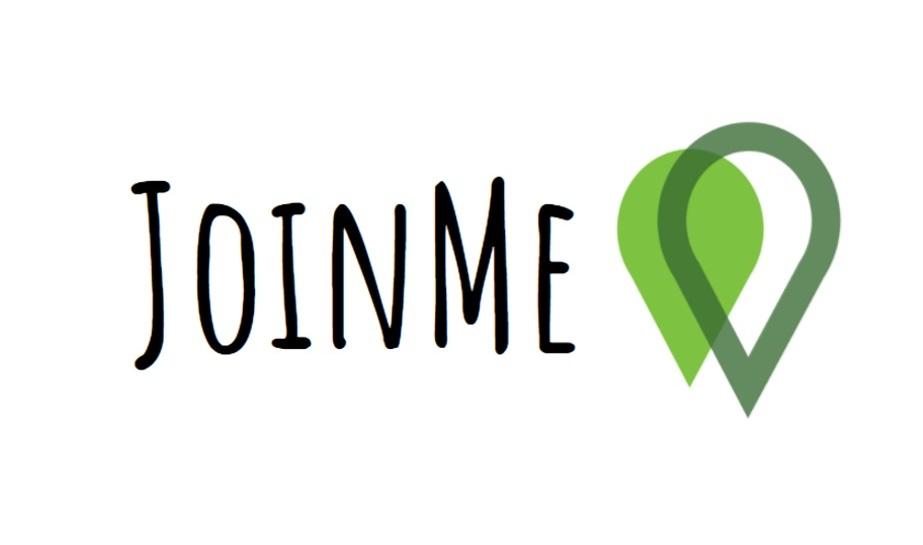
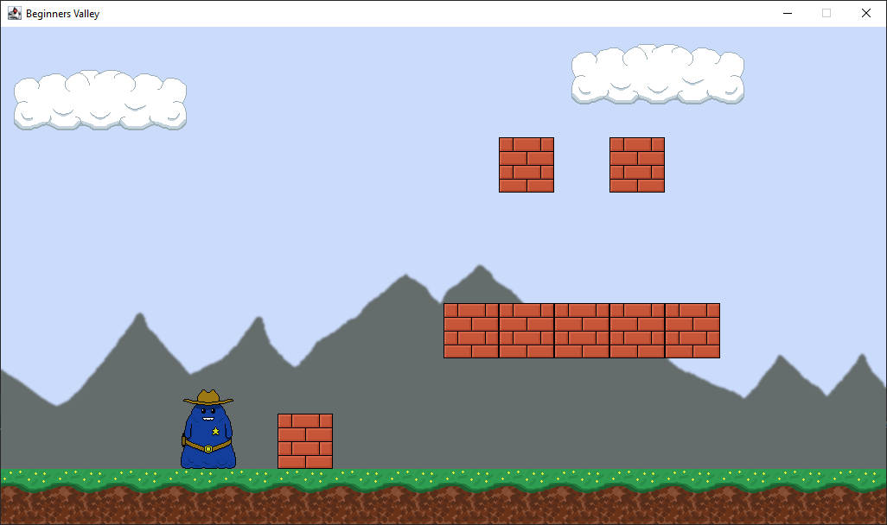
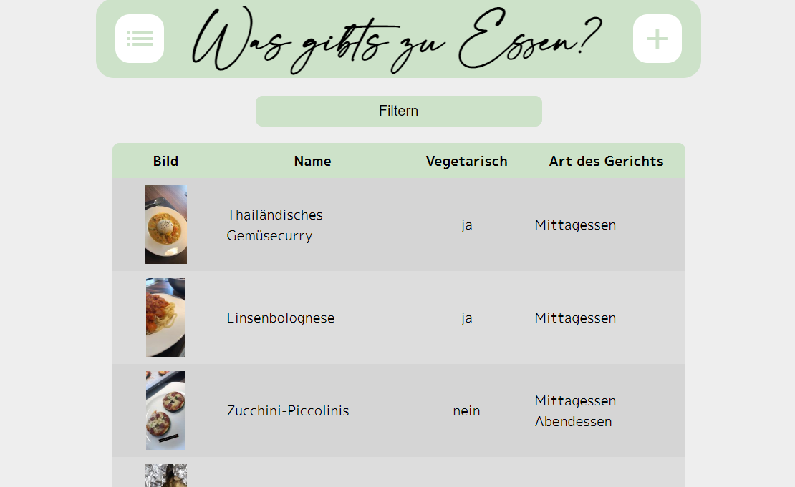

I am a 21-year-old Student and Software-Developer from Austria!
On this Website you can see what I do and like!
| Date of Birth | February 22nd, 1999 |
| Living in | Graz, Austria |
| What I do for fun | Programming, cycling, meeting friends, playing video games |
| Programming Languages | Java, JavaScript, Python, C#, PHP |
I went for 4 years to primary school, 4 years to middle school and then I for five years to the HTBLA Kaindorf, with the focus on Informatic.
There I learned a lot about all kind of different IT sections. Although working with cables and parts can be very interesting, I discovered that I am more into the Software side of things. The school provides the students with a variety of options to get certificates in different subjects if they choose to.
I very much enjoyed my time there and that reflected on my notes. I graduated there in 2018 with a grade average of 1,7.
After that I began studying Business Software Development at the FH Campus 02 in Graz. This field of study contains a mixture of economics and technical lectures. It is designed as being Dual, which means after the first two semesters there is a split where you study two days and work three days a week. I like this form of incorporating practice so you can already put the things learned in use. I am currently in the third semester and had even managed to get a scholarship because of my good grades.After graduating in the HTBLA Kaindorf I had the chance to work at the Knapp IT Solutions for half a year before I had to do my military service. There I started working as a junior SAP EWM Developer. That means working with huge warehouses and develop software to ensure that the goods in there went safely from A to B. Even though it was only a short amount of time there, I learned very much which I still use to this day. For example, the importance of good documentary and the use of organizational software.
Then the time came for the basic military service in Austria. Fortunately, instead of crawling in the mud, I got the chance to be there as a cyber soldier. As this what I had to do was fixing technical problems, introduce new IT systems and software and even held presentations about IT to the military commander of styria.
In the summer of 2020, after completing the first two semesters of studying, I again started working for the Knapp IT Solutions besides studying.
One of my greatest skill I have is that I am a quick learner. Especially when working with technology, I can pick up things quite easily. IT is my hobby and I like to be good at what I do there, so I try my best to improve my skills.
I also am very curious and like to try out new things. I have stepped foot in almost all parts of it and like to expand my horizon from day to day. From machine learning to programming a raspberry pi, I did everything.
Over the years, as I did more and more programming, I also managed my problem-solving skill a lot. This is a crucial skill to have in software development because you will be confronted with problems and bugs almost every day.
part of my diploma thesis as part of graduation from the HTBLA Kaindorf I and three of my friends worked on a Web-Application with the newest technology (at the time). JoinMe is a car-sharing service with the focus on rural areas and relatively short routes in comparison to other apps. This has been a collaboration with the city of Leibnitz and the state of Styria. Unfortunately, the app has been discontinued because none of us had the time to do so.
I always liked playing video games and as a child dreamed of one day making games myself. I have not managed to release a completed game yet, but I am on a good way there. Making video games by yourself is quite the challenge because there is so much to do like: programming, designing, music, storytelling and so on. Game development is not my number one priority, but I like to publish at least a small game in the next year or two.
Roughly translated to “What are we having to eat?”, this website I build for my girlfriend and me is there to be some sort of online recipe book. I am not that proficient into web-development so this is a good practice for me. Everything on this site is handcrafted with a minimum of additional libraries. The fundamentals of the website are working, like adding, viewing, editing, and deleting the recipes but there is still a lot to do.
Link to the website: http://wasgibtszuessen.bplaced.net/
As I am not only developing software for work, but for fun in my free time too, I did a lot of smaller scaled projects in all kind of types.
Examples:
Machine-Learning program for gesture recognition
A* pathfinding algorithm
Simple Game Engine
Creating Skills for the Amazon Alexa
And many more…